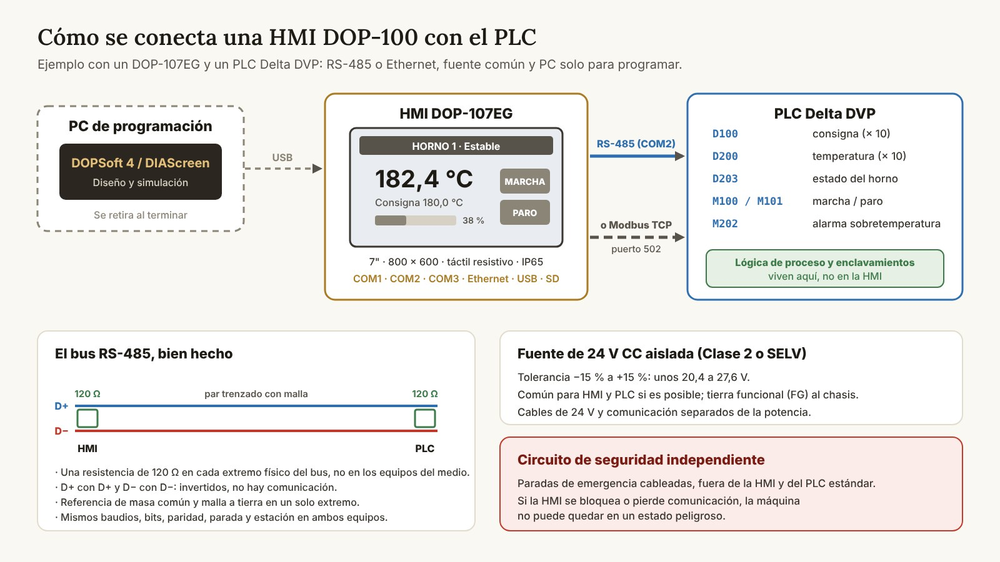
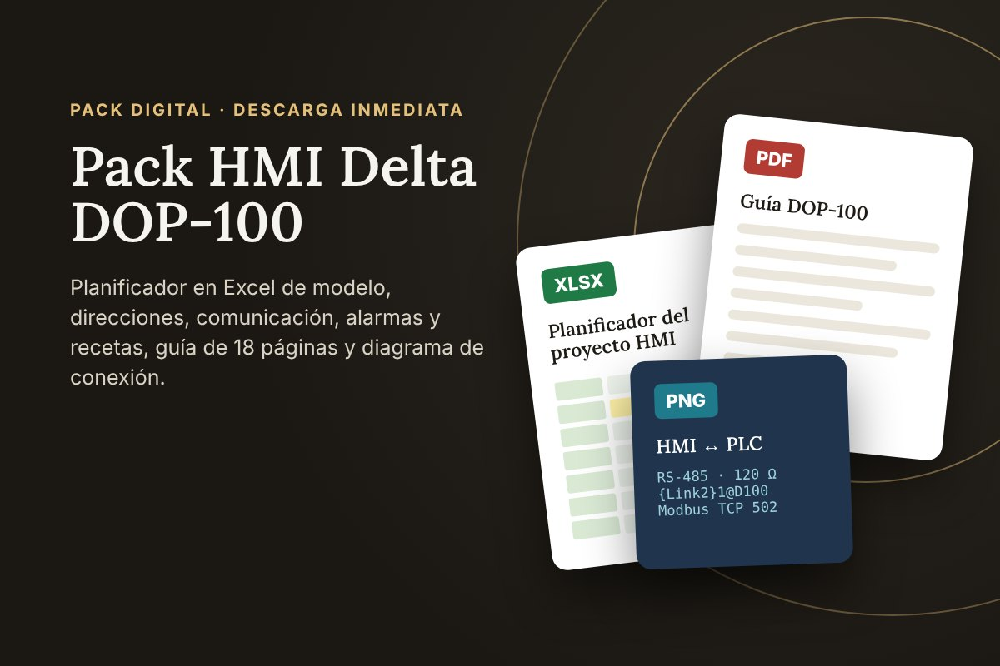

Qué cubre esta guía
- La serie DOP-100: qué modelo elegir
- Montaje, alimentación y primer arranque
- DOPSoft 4 y DIAScreen: el entorno de programación
- Comunicación con el PLC: Modbus paso a paso
- Diseño de pantallas eficaces
- Macros: lógica dentro de la HMI
- Alarmas, recetas y registro de datos
- Ejemplo completo: control de un horno
- Conclusión
- Preguntas frecuentes

Pack HMI Delta DOP-100: tu proyecto ordenado de principio a fin
Todo lo de esta guía, convertido en herramientas: elige el modelo con datos del catálogo, documenta las direcciones antes de dibujar y pon en marcha la comunicación sin adivinar.
- Planificador en Excel (9 hojas): selector de 18 modelos DOP-100 por tamaño, puertos, Ethernet, SD y recorte; mapa de direcciones con la dirección Modbus de un PLC DVP y aviso de duplicados; parámetros serie lado a lado y tiempo de refresco estimado; escalado; alarmas; recetas con límites; pantallas y lista de puesta en marcha.
- Guía en PDF (18 páginas): elección de modelo, montaje y alimentación, DOPSoft 4 y DIAScreen, cableado RS-485, configuración con PLC Delta y Modbus, diseño de pantallas, referencia rápida de macros, alarmas, recetas, usuarios y respaldo, el proyecto completo del horno y una tabla de diagnóstico.
- Diagrama de conexión HMI–PLC en alta resolución.
Al pagar descargas un archivo .zip con el planificador (.xlsx), la guía (.pdf), el diagrama (.png) y las instrucciones. El planificador se abre en Excel, LibreOffice y Google Sheets. No incluye el software de Delta, que se descarga gratis desde su sitio. Licencia de uso personal. Por ser contenido digital de descarga inmediata, no tiene derecho a retracto; si un archivo llega dañado o no abre, te lo reponemos o devolvemos el dinero.
La serie DOP-100: qué modelo elegir
Delta Electronics reemplazó la veterana serie DOP-B por la DOP-100, con más modelos, más puertos y un entorno de programación renovado. El nombre de cada modelo dice qué trae:
DOP - 1 07 E G
│ │ │ └── Resolución: Q = 480×272 · V = 800×480 · G = 800×600
│ │ │ S = 1024×600 · X = 1024×768
│ │ └──── Tipo: B = básico · D = básico con Ethernet
│ │ C = estándar · E = estándar con Ethernet
│ │ I = estándar con 3 COM y Ethernet
│ │ W = avanzado · M = avanzado multimedia
│ └─────── Tamaño: 03 = 4,3" · 07 = 7" · 10 = 10" · 12 = 12" · 15 = 15"
└───────── Serie 100| Modelo | Tamaño | Resolución | Puertos serie | Ethernet | SD | Uso típico |
|---|---|---|---|---|---|---|
| DOP-103BQ | 4,3" | 480 × 272 | 2 | No | No | Máquina simple, pocos parámetros |
| DOP-107BV | 7" | 800 × 480 | 2 | No | No | Una máquina con un PLC por RS-485 |
| DOP-107EV | 7" | 800 × 480 | 3 | Sí | No | Igual que la BV, con Ethernet |
| DOP-107EG | 7" | 800 × 600 | 3 | Sí | Sí | Ethernet y registro de datos en SD |
| DOP-110CS | 10" | 1024 × 600 | 3 | No | No | Más información por pantalla, solo serie |
| DOP-112MX | 12" | 1024 × 768 | 4 | Sí (2 puertos) | Sí | Supervisión de una línea |
Datos del catálogo DOP-100 de Delta (edición 2020). La serie tiene más modelos (C, D, I, W); revisa la ficha del tuyo.
Características comunes de la serie
- Alimentación 24 V CC con tolerancia de −15 % a +15 % (unos 20,4 a 27,6 V), desde una fuente aislada; consumo máximo entre 5,7 W (DOP-103BQ) y 16 W (DOP-112MX).
- Pantalla táctil resistiva de cuatro hilos: funciona con guantes, algo importante en entorno industrial.
- Un puerto USB esclavo para programar y uno USB anfitrión para memorias; ranura SD solo en algunos modelos.
- Frontal IP65 / NEMA 4 cuando se monta correctamente con su junta. Temperatura de operación de 0 a 50 °C.
- Calendario con batería de respaldo CR2032 para sellar en el tiempo alarmas y registros.
Montaje, alimentación y primer arranque
Recorte de panel y montaje
Cada modelo tiene una cota de recorte específica, y modelos del mismo tamaño pueden tener recortes distintos: el DOP-107EG no usa el mismo que el DOP-107BV. Respeta la medida y su tolerancia: un recorte generoso arruina el sellado IP65 del frontal.
Recorte de panel según el catálogo de Delta (verifica en la hoja de tu modelo):
DOP-103BQ → 118,8 × 92,8 mm
DOP-107BV → 196,0 × 142,9 mm
DOP-107EG → 172,4 × 132,4 mm
DOP-110CS → 261,3 × 189,3 mm
Montaje:
1. Colocar la junta de goma en el marco de la HMI
2. Insertar desde el frente del tablero
3. Fijar con las grapas suministradas, apretando en cruz
4. No sobreapretar: deforma el marco y rompe el selladoAlimentación
- Conecta el borne de tierra funcional (FG) al chasis del tablero con cable corto y de sección adecuada. Sin esta conexión, el táctil puede comportarse de forma errática con variadores cerca.
- Alimenta la HMI desde la misma fuente de 24 V que el PLC cuando sea posible, para evitar bucles de masa en la comunicación serie.
- Si el tablero contiene variadores de frecuencia, separa físicamente el cableado de 24 V y de comunicación del cableado de potencia. Los criterios generales están en la guía de gestión de cables en tableros y brazos.
Primer arranque y configuración del sistema
Al energizar por primera vez, la HMI no tiene proyecto cargado. Desde el menú del sistema (la forma de entrar depende del modelo y de la versión del firmware: revisa el manual) se ajustan:
- Idioma de la interfaz del sistema.
- Dirección IP si el modelo tiene Ethernet (fija, nunca DHCP en un entorno industrial).
- Brillo, tiempo de apagado de retroiluminación y calibración del táctil.
- Fecha y hora del reloj interno.
DOPSoft 4 y DIAScreen: el entorno de programación
DOPSoft 4 es el software gratuito de Delta para programar la serie DOP-100. Se descarga desde el centro de descargas del fabricante y funciona en Windows. Delta también ofrece DIAScreen, parte de su suite DIAStudio, que programa la serie DOP-100 y la serie TP: si partes de cero, revisa cuál recomienda Delta para tu modelo y versión de firmware.
Estructura de un proyecto
Proyecto DOPSoft
├── Configuración de HMI → modelo, orientación, resolución
├── Enlaces de comunicación → uno por puerto o conexión (COM, Ethernet)
├── Pantallas (Screens) → numeradas; la 1 es la de arranque
│ ├── Elementos gráficos
│ ├── Botones y entradas
│ └── Macros de pantalla
├── Macros globales → inicial, de fondo, de reloj, submacros
├── Programa (Lua) → scripts Lua (DOPSoft 4.00.11 o posterior)
├── Alarmas → tabla de condiciones y mensajes
├── Recetas → grupos de parámetros
└── Configuración de seguridad → niveles y contraseñasFlujo de trabajo recomendado
- Definir el enlace de comunicación primero. Todo lo demás depende de las direcciones que puedas referenciar.
- Diseñar la navegación antes que las pantallas concretas: cuántas hay y cómo se pasa de una a otra.
- Construir una pantalla plantilla con la barra superior, el pie y los botones de navegación, y copiarla para las demás. Mantiene la coherencia visual.
- Simular en el PC (modo offline) antes de descargar a la HMI: ahorra muchísimo tiempo.
- Descargar y probar contra el PLC real.
Comunicación con el PLC: Modbus paso a paso
La HMI actúa normalmente como maestro Modbus y el PLC como esclavo. La configuración se hace en el apartado de enlaces del proyecto.
Modbus RTU sobre RS-485
Parámetros que deben coincidir EXACTAMENTE en ambos extremos:
Velocidad (baudios) : 9600, 19200, 38400, 115200
Bits de datos : 8 (o 7 en algunos equipos antiguos)
Paridad : Ninguna / Par / Impar
Bits de parada : 1 o 2
Dirección de esclavo: 1 a 247
Formato : RTU (binario) o ASCII
Configuración de partida habitual con PLC Delta:
9600, 7, Par, 1, ASCII ← valor de fábrica de muchos DVP
115200, 8, Ninguna, 2, RTU ← configuración de mayor rendimientoMapeo de direcciones
Con un PLC Delta DVP no necesitas traducir nada: eliges su controlador en el enlace y escribes las direcciones con su nombre (D100, M0, X0). La tabla de direcciones Modbus sirve cuando otro equipo, un SCADA o un cliente Modbus de prueba, habla con el DVP:
| Dispositivo DVP | Tipo Modbus | Dirección Modbus (hex) | Acceso |
|---|---|---|---|
| X0 – X377 (octal) | Entrada discreta | 0400 – 04FF | Solo lectura de bit |
| Y0 – Y377 (octal) | Coil | 0500 – 05FF | Lectura y escritura de bit |
| M0 – M1535 | Coil | 0800 – 0DFF | Lectura y escritura de bit |
| M1536 – M4095 | Coil | B000 – B9FF | Lectura y escritura de bit |
| D0 – D4095 | Holding register | 1000 – 1FFF | Lectura y escritura de palabra |
| D4096 en adelante | Holding register | desde 9000 | Lectura y escritura de palabra |
Los rangos dependen de la CPU: confírmalos en el manual de tu DVP. Fíjate en los saltos: M1536 no sigue a M1535 en 0E00, sino en B000.
Ejemplo de mapa de una máquina sencilla:
D100 → Consigna de temperatura (× 10, en décimas de grado)
D101 → Temperatura medida (× 10)
D102 → Contador de piezas producidas
D110 → Palabra de estado (bits de máquina)
M100 → Orden de marcha desde HMI
M101 → Orden de paro desde HMI
M102 → Reconocimiento de alarma
M200 → Bit de máquina en marcha (PLC → HMI)
M201 → Bit de alarma activa (PLC → HMI)Modbus TCP sobre Ethernet
Más simple de cablear y considerablemente más rápido. En los modelos con Ethernet:
- Asigna IP fija a HMI y PLC en la misma subred (por ejemplo 192.168.1.10 y 192.168.1.20).
- Puerto 502, el estándar de Modbus TCP.
- Unit ID normalmente 1, aunque algunos gateways requieren otro valor.
- Verifica la conectividad con un ping desde el PC antes de culpar a la configuración de la HMI.
Diagnóstico cuando no comunica
- ¿Aparece un mensaje de error de comunicación en pantalla? Anota el código exacto.
- Verifica que los parámetros serie coinciden dígito a dígito en ambos extremos.
- Prueba a intercambiar D+ y D−: es el fallo más común y es inofensivo probarlo.
- Confirma la dirección de esclavo del PLC. Muchos vienen con dirección 1 pero no todos.
- Usa un PC con un cliente Modbus para hablar directamente con el PLC y aislar dónde está el problema.
- Comprueba que el PLC tenga habilitada la comunicación en ese puerto: en muchos modelos hay que configurarla en registros especiales del programa.
Diseño de pantallas eficaces
Una HMI mal diseñada es peor que no tener HMI: induce errores de operación. Estos criterios combinan la práctica industrial con las ideas de la norma ISA-101 sobre interfaces de alto rendimiento.
| Principio | Aplicación concreta |
|---|---|
| Fondo neutro | Gris claro, no negro ni blanco puro. El color debe reservarse para el significado |
| El color comunica anormalidad | Rojo y amarillo reservados para alarmas y advertencias; los estados normales en tonos de gris, para que lo anormal destaque |
| Jerarquía de pantallas | Vista general → área → detalle → diagnóstico. ISA-101 describe hasta cuatro niveles; en una máquina chica bastan dos o tres |
| Tamaño de los botones | Del orden de 15 × 15 mm reales o más si se opera con guantes (recomendación práctica) |
| Confirmación de acciones críticas | Diálogo de confirmación en cualquier acción que mueva la máquina |
| Unidades siempre visibles | Junto a todo valor numérico, sin excepción |
| Realimentación inmediata | Todo botón debe cambiar de aspecto al pulsarse |
Elementos más usados en DOPSoft
- Botones Set, Reset, Maintained y Momentary: escriben un bit. Usa Momentary para órdenes de marcha y paro: el bit vuelve a 0 al soltar y el PLC enclava la orden.
- Numeric Entry y Numeric Display: entrada y visualización de valores con escalado, límites y número de decimales configurables.
- Multi-State Indicator: muestra un gráfico distinto según el valor de un registro. Ideal para estados de máquina.
- Bar Graph y Meter: representación analógica de una variable. Mucho más legible de un vistazo que un número.
- Trend Graph: gráfico de tendencia histórica, imprescindible en procesos térmicos o de presión.
- Elementos de alarma: lista de alarmas activas, historial con marca de tiempo y frecuencia de alarmas.
Macros: lógica dentro de la HMI
DOPSoft ejecuta pequeños programas llamados macros, con un lenguaje propio orientado a líneas: una instrucción por línea, bloques IF … ELSEIF … ELSE … ENDIF y comentarios que empiezan con #. Cada macro admite hasta 512 líneas. DOPSoft 4 suma además un editor de scripts Lua para lógica más elaborada.
| Tipo de macro | Cuándo se ejecuta | Uso típico |
|---|---|---|
| Initial Macro | Una vez al arrancar la HMI | Inicializar variables internas |
| Background Macro | Continuamente, unas líneas en cada ciclo | Vigilancia permanente de baja prioridad |
| Clock Macro | Cada intervalo configurado | Tareas periódicas |
| Screen Open / Close Macro | Al entrar o salir de una pantalla | Preparar o guardar datos de esa vista |
| Screen Cycle Macro | Repetidamente mientras la pantalla está abierta | Cálculos de presentación de esa pantalla |
| ON / OFF Macro | Cuando el bit de un botón pasa a 1 o a 0 | Lógica asociada a un botón |
| Before / After Execute Macro | Antes o después de la acción de un botón | Validar o completar la acción |
| Submacro | Cuando otra macro la llama con CALL | Código que se repite |
Direcciones en las macros
$0,$1…: memoria interna de la HMI, una palabra de 16 bits cada una.$10.0es el bit 0 de$10.{Link2}1@D100: registro D100 del equipo con estación 1 en el enlace 2. No lo escribas a mano: elige la dirección con el asistente del editor y DOPSoft inserta el prefijo correcto.
# Macro ON del botón "Enviar consigna"
# $30 = consigna escrita por el operador, en décimas de grado
IF $30 > 850
$30 = 850
$31 = 1
ELSEIF $30 < 150
$30 = 150
$31 = 1
ELSE
$31 = 0
ENDIF
# $31 = 1 enciende el aviso "valor recortado"
{Link2}1@D100 = $30# Screen Cycle Macro: desviación respecto de la consigna
$40 = {Link2}1@D200
$41 = {Link2}1@D100
IF $40 >= $41
$42 = $40 - $41
ELSE
$42 = $41 - $40
ENDIF
# $43 = 1 si está dentro de ±2,0 °C
IF $42 <= 20
$43 = 1
ELSE
$43 = 0
ENDIFAlarmas, recetas y registro de datos
Sistema de alarmas
DOPSoft gestiona las alarmas mediante una tabla donde cada fila asocia una condición (normalmente un bit del PLC) con un mensaje, un nivel de prioridad y opcionalmente una pantalla a la que saltar.
Estructura recomendada del bloque de alarmas en el PLC:
M300 Emergencia pulsada Prioridad 1 Crítica
M301 Falla térmica del motor Prioridad 1 Crítica
M302 Presión fuera de rango Prioridad 2 Alta
M303 Temperatura sobre el límite Prioridad 2 Alta
M304 Nivel de material bajo Prioridad 3 Advertencia
M305 Mantenimiento programado Prioridad 4 Informativa
Buenas prácticas:
· Un mensaje debe decir QUÉ pasa y DÓNDE, no un código críptico
· Cada alarma debe tener una acción posible por parte del operador
· Evita la avalancha: si un fallo dispara diez alarmas, agrúpalas
· Guarda el histórico en tarjeta SD para el análisis posteriorRecetas
Una receta es un conjunto de valores de parámetros que se cargan al PLC de una sola vez. Es la función que convierte una máquina en flexible: cambiar de producto pasa de ajustar quince valores a mano a pulsar un botón.
Ejemplo: máquina de sellado térmico
Receta Temp. Tiempo Presión Velocidad
(°C) (ms) (bar) (m/min)
─────────────────────────────────────────────────────
Bolsa PE 50 µm 145 800 2,5 12
Bolsa PE 80 µm 160 1200 3,0 9
Laminado PET 185 1000 3,5 10
Papel encerado 120 600 2,0 15
En DOPSoft:
· Se define un grupo de receta con 4 elementos (los parámetros)
· Cada fila es una receta con su nombre
· Un botón "Cargar receta" escribe el bloque completo en el PLC
· Los datos se guardan en la memoria no volátil de la HMIRegistro de datos
La serie DOP-100 puede muestrear valores periódicamente y guardar el historial en su memoria, en una memoria USB o, en los modelos que la tienen, en una tarjeta SD, para revisarlo después en el PC. Configuración típica:
- Definir el bloque de registros a muestrear (por ejemplo D200 a D210).
- Fijar el intervalo de muestreo: cada segundo para procesos rápidos, cada minuto para térmicos.
- Elegir el destino y la política de rotación de archivos, normalmente uno por día.
- Si el modelo tiene ranura SD, usar una tarjeta de calidad industrial: las tarjetas de consumo fallan con escritura continua.
Ejemplo completo: control de un horno
Un proyecto pequeño pero completo, con todos los elementos vistos.
Definición del mapa de datos
PLC → HMI (lectura)
D200 Temperatura medida (× 10)
D201 Potencia de salida en %
D202 Tiempo restante de ciclo en segundos
D203 Estado: 0=parado 1=calentando 2=estable 3=enfriando 4=fallo
M200 Horno en marcha
M201 Temperatura alcanzada
M202 Alarma de sobretemperatura
M203 Alarma de sonda desconectada
HMI → PLC (escritura)
D100 Consigna de temperatura (× 10)
D101 Tiempo de ciclo en minutos
M100 Marcha
M101 Paro
M102 Reconocer alarmaEstructura de pantallas
| Nº | Pantalla | Contenido |
|---|---|---|
| 1 | Principal | Temperatura grande, estado, barra de potencia, marcha y paro |
| 2 | Parámetros | Entrada de consigna y tiempo, protegida por contraseña |
| 3 | Tendencia | Gráfico de temperatura de las últimas dos horas |
| 4 | Recetas | Selección y carga de perfiles de cocción |
| 5 | Alarmas | Activas e histórico con marca de tiempo |
| 6 | Diagnóstico | Estado de comunicación, horas de servicio, versión |
Macros de la pantalla principal
El estado del horno no necesita macro: un Multi-State Indicator leído desde D203 muestra un gráfico y un texto para cada valor (0 parado, 1 calentando, 2 estable, 3 enfriando, 4 fallo). La macro que sí conviene es la Screen Cycle Macro de la sección anterior, que calcula la desviación respecto de la consigna y enciende el indicador de precisión cuando está dentro de ±2,0 °C. El botón "Enviar consigna" usa la macro ON con los límites de 15,0 a 85,0 °C.
Niveles de seguridad
Nivel 0 Operador Ver pantallas, marcha y paro, reconocer alarmas
Nivel 1 Supervisor Cambiar consignas dentro de rango, cargar recetas
Nivel 2 Mantenimiento Editar recetas, ver diagnóstico, ajustar límites
Nivel 3 Ingeniería Acceso completo, configuración del sistema
En DOPSoft se asigna un nivel de seguridad a cada elemento y a cada pantalla.
Cambia las contraseñas por defecto antes de poner la máquina en servicio.Si en tu instalación conviven autómatas antiguos con hardware moderno, la guía sobre virtualizar estaciones de programación de PLC antiguos resuelve el problema de mantener el software heredado accesible.
Conclusión
La serie DOP-100 ofrece una relación entre capacidad y precio difícil de igualar en interfaz industrial. Con un DOP-107 y un PLC modesto se construyen máquinas que hace una década habrían requerido un presupuesto varias veces mayor, y DOPSoft, con todas sus rarezas, es un entorno gratuito y suficientemente capaz.
Tres decisiones marcan la diferencia entre un proyecto que envejece bien y uno que se vuelve inmantenible. Primera: documenta el mapa de direcciones antes de dibujar la primera pantalla, incluyendo los factores de escala. Segunda: mantén toda la lógica de proceso en el PLC y usa las macros solo para presentación y validación de entradas. Tercera: diseña la navegación pensando en el operador, no en la comodidad del programador.
Y la advertencia que conviene repetir: la HMI es una ventana al proceso, nunca un elemento de seguridad. Los enclavamientos viven en el autómata y las funciones de seguridad en circuitos certificados independientes. Una pantalla que se cuelga no debe poder dejar una máquina en estado peligroso.
Preguntas frecuentes
¿DOPSoft es gratuito y dónde se descarga?
Sí, DOPSoft es gratuito y se descarga desde el centro de descargas del sitio oficial de Delta Electronics, sin licencia ni activación. DOPSoft 4 programa la serie DOP-100 y abre proyectos de modelos DOP-B compatibles para convertirlos. DOPSoft 2.00, el de la serie DOP-B, ya no se actualiza ni se descarga desde el centro de descargas. Delta también ofrece DIAScreen para la serie DOP-100.
¿Puedo conectar una HMI Delta a un PLC de otra marca?
Sí. DOPSoft incluye controladores para una amplia lista de fabricantes, entre ellos Siemens, Mitsubishi, Omron, Allen-Bradley y Schneider, además del protocolo Modbus genérico en sus variantes RTU, ASCII y TCP. Con Modbus estándar puedes comunicar prácticamente con cualquier dispositivo industrial. Lo que debes verificar es que los parámetros de comunicación coincidan exactamente y que conozcas el mapa de registros del dispositivo remoto.
¿Qué diferencia hay entre la serie DOP-B y la DOP-100?
La DOP-100 es la generación que reemplazó a la DOP-B: más modelos y combinaciones de puertos, Ethernet en más versiones, USB anfitrión en todos los modelos y un editor Lua además de las macros. También cambia el software, de DOPSoft 2.00 a DOPSoft 4, que convierte proyectos de modelos DOP-B compatibles. Las cotas de recorte no son necesariamente las mismas, así que reemplazar una unidad antigua puede exigir modificar el tablero.
¿Por qué mi HMI no comunica con el PLC aunque los parámetros coinciden?
Las causas más frecuentes, en orden de probabilidad, son: cables D+ y D− intercambiados en el bus RS-485, ausencia de resistencias terminadoras de 120 ohmios en los extremos del bus, falta de una referencia de masa común entre los equipos, dirección de esclavo del PLC distinta de la configurada en la HMI, y comunicación no habilitada en el propio programa del PLC, ya que en muchos modelos hay que activarla escribiendo en registros especiales. Aislar el problema con un cliente Modbus desde un PC ahorra mucho tiempo.
¿Puede la HMI sustituir al PLC en aplicaciones sencillas?
No es recomendable, aunque técnicamente las macros permitan implementar cierta lógica. La HMI no tiene entradas y salidas digitales industriales, su tiempo de ciclo no es determinista, y una pérdida de comunicación o un bloqueo de la interfaz dejaría el proceso sin control. Además, ninguna función de seguridad puede residir en una HMI. Para aplicaciones muy simples existen alternativas más apropiadas, como los relés programables o los PLC compactos de gama baja.
¿Qué tarjeta SD conviene usar para el registro de datos?
Primero, confirma que tu modelo tenga ranura SD: en la serie DOP-100 solo algunos la traen (por ejemplo DOP-107EG y DOP-112MX). Una tarjeta de grado industrial con memoria de tipo SLC o pSLC, de capacidad modesta, entre 4 y 16 gigabytes. Las tarjetas de consumo están optimizadas para escrituras esporádicas de archivos grandes y fallan prematuramente con el patrón de escritura continua de pequeños bloques que genera un registrador. Conviene además configurar la rotación diaria de archivos y descargar periódicamente los datos, en lugar de acumular meses de registro en la tarjeta.
Este artículo es contenido editorial independiente y no contiene enlaces de afiliado. Incluye la oferta de un pack digital de pago elaborado por ukrabot.cl, identificado como tal. El código y las conexiones son referenciales y deben adaptarse y probarse con tu propio hardware. Si detectas un error en esta guía, por favor avísanos.
Sigue aprendiendo
Completa la instalación con los criterios de integración de brazos robóticos con PLC y con la guía de programación de PLC aplicada a robótica.
Fuentes primarias y lecturas recomendadas
Documentación del fabricante y normativa de referencia en diseño de interfaces de operador. Verifica siempre las cotas y parámetros en el manual de tu modelo concreto.
- Delta Electronics — Centro de descargas de software y manuales
- Delta Electronics — Serie de HMI DOP-100
- Delta Electronics — Catálogo de la serie DOP-100 (modelos, puertos, recortes y alimentación)
- Delta Electronics — FAQ: DOP-B reemplazada por DOP-100 y conversión de proyectos con DOPSoft 4
- Delta Electronics — FAQ: scripts Lua en DOPSoft 4 para la serie DOP-100
- Mapa de direcciones Modbus de los PLC Delta DVP
- Modbus Organization — Especificación del protocolo Modbus
- ISA — Norma ISA-101 sobre interfaces hombre-máquina
- TIA/EIA-485 — Norma de la capa física RS-485
Enlaces revisados: 23 de noviembre de 2026.